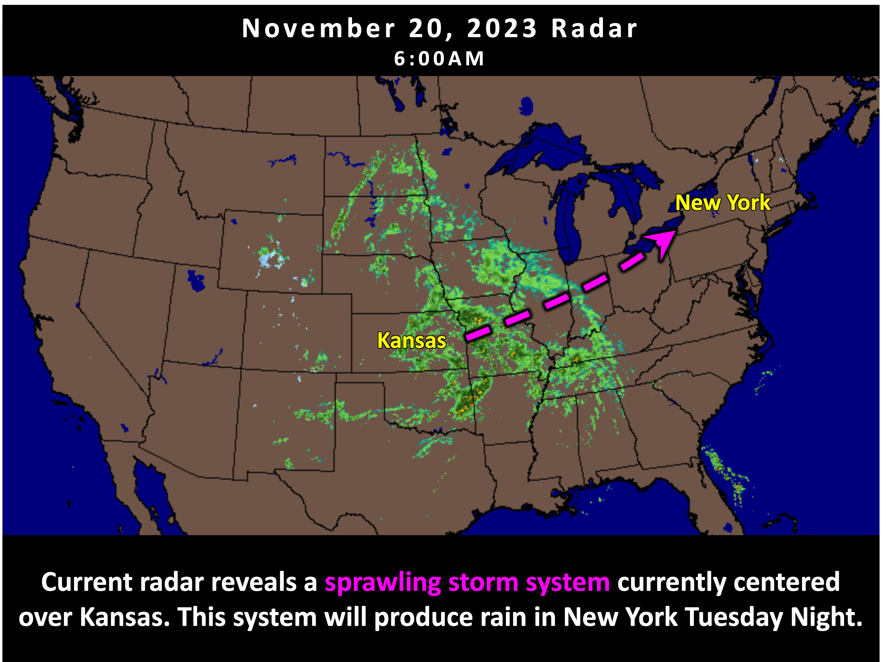
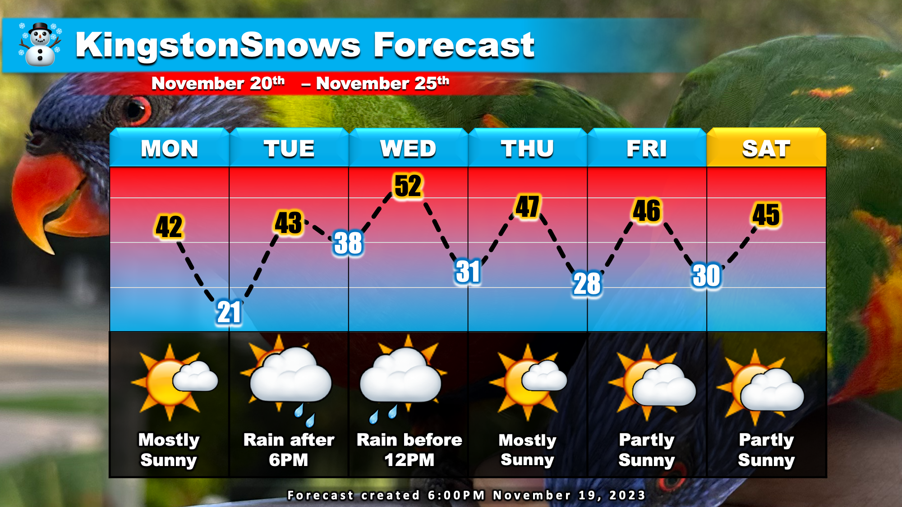

Rain Tuesday Night
School Forecast
through Tuesday November 22nd
Last updated: 6:00AM Monday November 20, 2023
| 0% (Nope) |
|---|
| 0% (Nope) |
|---|
| 0% (Nope) |
|---|
___________________
Happy Thanksgiving week! Much like last week, the weather this week will be generally calm. The one exception to this will come Tuesday into Wednesday with steady rain.
A storm system is currently developing over Kansas and Nebraska in the central US. This storm system will intensify and shift eastward toward New York over the next 48 hours. While this system will likely result in snow up in the Adirondack Mountains, here in the Hudson Valley steady rain will occur Tuesday night. Currently, the most likely timing of rain in Kingston will be between 6PM Tuesday and 12PM Wednesday. Expect steady rain to accumulate to about an inch. After rain tapers off Wedneday afternoon, expect a mix of sun and clouds for the remainder of the Thanksgiving break.
This week I'm forecasting from Australia, so instead of a Thanksgiving turkey on the forecast graphic I've opted to share a pair of wild lorikeets that I met!
Next Update:
Probably next Sunday
-Ethan
KingstonSnows | Kingston, New York
Website built by Ethan Burwell